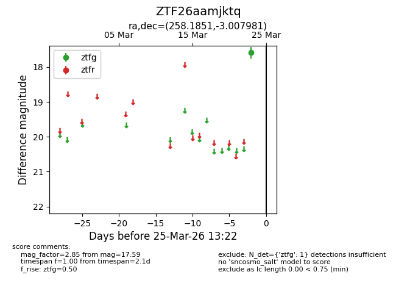
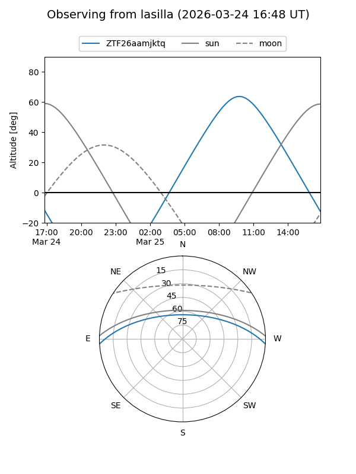
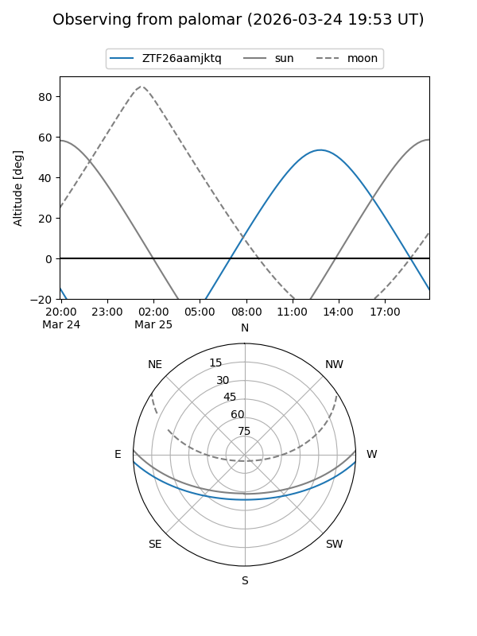

ZTF26aamjktq
Target ZTF26aamjktq at 2026-03-25 13:25
Aliases and brokers:
FINK: link
Lasair: link
ALeRCE: link
alt names
ZTF26aamjktq (ztf,fink_ztf)
Coordinates:
equatorial (ra, dec) = 258.1851,-3.00798
equatorial (HMS+DMS) = 17:12:44.43,-03:00:28.73
galactic (l, b) = (18.3069,+20.30975)
Flags:
Photometry:
last ztfg=17.59
1 ztfg detections
Lightcurve

Visibility


Additional plots